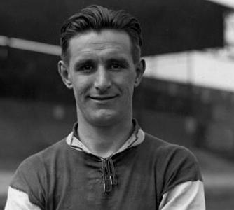

Vic Watson and the best £50 West Ham ever spent

Who is West Ham’s all time top scorer?
West Ham’s all-time top scorer is Vic Watson, who scored 326 goals during his career with the club, from 1920 to 1935. He is followed by Geoff Hurst with 252 goals, and John Dick and Jimmy Ruffell, both with 166 each.
Watson was born on 10 November 1897 in Girton, Cambridgeshire and signed for West Ham in 1920 from Wellingborough Town for £50 (around £1,500 in today’s money). His record includes 13 hat-tricks, 298 league goals and 28 FA Cup goals, with 203 of those league goals coming from just 295 top-flight matches. His peak season was 1929–30, with 50 goals in 44 games. He earned five England caps, scoring four goals. Throughout his career, Watson consistently scored in double figures, scoring over 20 goals in nine different seasons.
Memorable Moments
Vic's 15-years at West Ham were marked by several key moments that solidified his legacy.
- Promotion to the First Division: In the 1923-24 season, Watson played a crucial role in helping West Ham gain promotion to the First Division, scoring 22 goals that season.
- FA Cup Final Appearance: Watson was part of the West Ham team that reached the FA Cup final in 1923 where they faced Bolton Wanderers. Although West Ham lost 2-0, the match was historic as it was the first FA Cup final held at Wembley Stadium.
- Six Goals Against Leeds United: One of Watson's most memorable performances came on 9 February 1929, when he scored six goals in an 8-2 victory against Leeds United at Upton Park. It remains one of the highest individual goal tallies in a single match for West Ham.
- Outstanding Seasons: Watson had several standout seasons, including the 1929-30 campaign where he scored 50 goals in 44 matches, helping West Ham finish seventh in the league.
- International Recognition: Despite his remarkable club career, competition for places meant that Watson earned only five caps for England, scoring four goals. He scored two of these against Scotland during the 1930 British Home Championship.
Playing Style
Watson's playing style set him apart from other centre-forwards of his time in several ways. His approach was characterised by a combination of technical skill, intelligence, and unselfish play.
- Clever Distribution: Unlike many traditional centre-forwards who primarily focused on scoring, Watson was known for his ability to distribute the ball effectively. He often opened up the game by holding the forward line together and making intelligent passes to teammates.
- Unselfish Play: Watson's unselfish nature was a defining trait of his style. He prioritised team play over individual accolades, often assisting his teammates in goal-scoring situations. This collaborative approach was particularly effective in West Ham's passing game, where players were well aware of each other's movements and positions on the field.
- Speed and Intelligence: Watson combined speed with positioning, allowing him to exploit openings in opposing defences. His ability to read the game and anticipate the play meant he could quickly transition from playmaking to goal-scoring.
- Versatility in Attack: While primarily a centre-forward, Watson also played as an inside left. This adaptability allowed West Ham to modify their attacking strategies based on the match situation and opposition tactics.
- Focus on Team Dynamics: Watson thrived in a team-oriented environment that emphasised passing and movement. His partnership with players like Jimmy Ruffell exemplified this dynamic, as they worked together to break down defences through coordinated attacks rather than relying solely on individual brilliance.
Key Team Mates
During his career at West Ham Watson played alongside several notable players. Some of these key team mates included:
- Syd Puddefoot: Initially, Watson was brought in as cover for Puddefoot, a local hero and prolific scorer for West Ham. After Puddefoot's transfer in 1922, Watson took over the centre-forward position.
- Jimmy Ruffell: A talented forward who played alongside Watson, Ruffell was known for his passing ability and goal-scoring prowess, forming a strong partnership with Watson in the attack.
- Edward Hufton: The club's goalkeeper during Watson's time, Hufton was instrumental in providing a solid defensive foundation.
- George Kay: A versatile player who contributed both defensively and offensively, Kay was part of the team that supported Watson's goal-scoring efforts.
- Billy Moore: Another forward who played with Watson, Moore was known for his skillful play and ability to create chances.
- Jack Tresadern: A defender who helped maintain the team's stability at the back while Watson focused on scoring goals.
These players, along with others like Sid Bishop, Billy Brown, Dick Richards, Jack Young, and Billy Henderson, helped Watson to shine at West Ham.
Partnership With Jimmy Ruffell
Vic Watson's partnership with Jimmy Ruffell created an attacking force that was instrumental in shaping West Ham’s attacking strategy during the 1920s and early 1930s.
- Dynamic Wing Play: Jimmy Ruffell, playing as the outside left, was known for his speed and technical skills. His ability to stretch defences and deliver accurate crosses allowed Watson, as the centre-forward, to exploit scoring opportunities. Ruffell's capacity to cut inside and shoot from distance, known as the "Ruffell special," added an additional dimension to West Ham's attack.
- Passing Strategy: Both players thrived in a passing-oriented system that was a hallmark of West Ham's style under manager Charlie Paynter. Watson was able to hold the ball up and distribute it to teammates, including Ruffell, who would make runs into space. This unselfish play helped maintain fluidity in their attacking movements, allowing for quick transitions and creating goal-scoring chances.
- Crossing and Finishing: Ruffell's ability to deliver precise crosses into the box complemented Watson's positioning and finishing skills. During matches, Ruffell would often get to the byline or find space on the wing to send in crosses that Watson could convert into goals.
- Legacy of Collaboration: The successful collaboration between Watson and Ruffell established a template for future attacking players at West Ham. Their ability to work together influenced subsequent generations of players at the club.
After Football
After retiring from football, Watson became a market gardener in his hometown of Girton, Cambridgeshire. He grew vegetables, particularly tomatoes and cucumbers, to stay active after his football career.
He briefly worked as a coach at Cambridge City, where he contributed to the development of younger players and remained involved in the sport at a grassroots level.
Vic passed away on 3 August 1988, at the age of 90. In June 2010, a plaque honouring him was unveiled in his hometown of Girton.
References
- Hammers News: West Ham United's leading goalscorers of all time
- Hammers News: West Ham great Vic Watson
- West Ham Stats: Victor Watson
- WHUFC: Six-goal Vic Watson lays out Leeds
- Hogg, Tony (2005). Who's Who of West Ham United. Profile Sports Media. p. 211.
- West Ham Till I Die: Crossed Hammers Three Lions - Vic Watson
- The Hex Blog: Hotshot Hammers
- Spartacus Educational: Vic Watson
- Read West Ham: Top 5 players in history - Vic Watson
- Spartacus Educational: Vic Watson
- WHUFC: Six-goal Vic Watson lays out Leeds
- West Ham Till I Die: Vic Watson
- Hammers News: Vic Watson
- West Ham Till I Die: Vic Watson
- Hammers News: Vic Watson
- WHUFC: Record goalscorer Watson No.7
- Hammers News: Vic Watson
- The Hex Blog: Hotshot Hammers
- Spartacus Educational: Vic Watson
- West Ham Till I Die: Vic Watson
- The Football History Boys: Brentford vs West Ham 1927
- Hammers News: Vic Watson
- Spartacus Educational: Vic Watson
- Read The League: The Flying Hammer
- The Hex Blog: Hotshot Hammers
- Spartacus Educational: Vic Watson
- The Hex Blog: Hotshot Hammers
- Read The League: The Flying Hammer
- Spartacus Educational: Vic Watson
- Saints Players: Vic Watson
- WHUFC: Record goalscorer Watson
- Saints Players: Vic Watson
- West Ham Till I Die: Vic Watson
- Cambridge News: Tribute to local footie hero